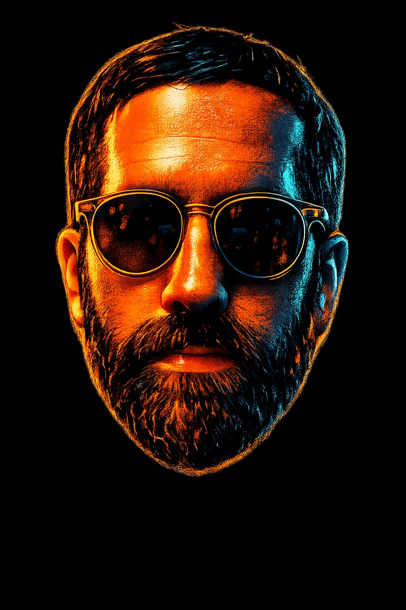

OperatorA configurable sleep-prevention timer for Windows. Set your default duration once, and it lives in the system tray. The Caffeine for PC that should've existed years ago.
Bulk photo deduplication and date-based sorting. Reads EXIF, filenames, and JSON sidecars to organize thousands of scattered photos into clean 6-month folders.
A real job search dashboard with pipeline visualization, application funnel analytics, and interview prep tracking. Because spreadsheets don't cut it.
A centralized job board for displaced emergency management and disaster recovery professionals. Aggregates niche postings that get buried on Indeed and LinkedIn.
Scans a directory and flags potentially NSFW images using ML classification. For when you need to audit a drive before selling it or handing it off.